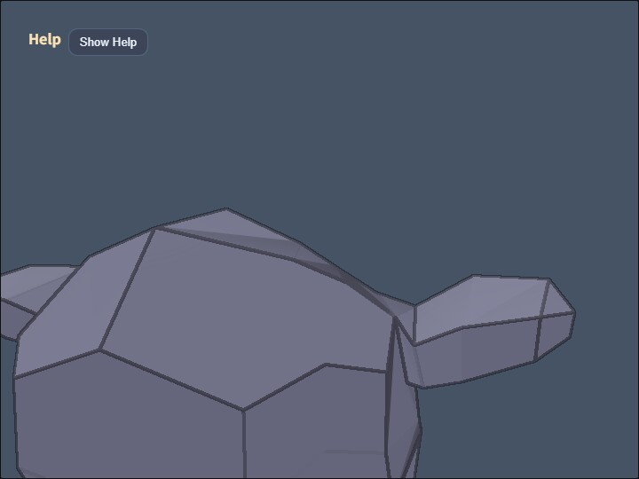

compute_json

compute_json is a general-purpose JSON viewer that loads a 3D model and its animations from ModelAsset JSON and applies ComputeEffectPipeline effects to the animated scene. It does not depend on model-specific names, part names, or coordinates, so changing MODEL_ASSET_FILE is enough to reuse the same viewing, animation, and effect workflow with another ModelAsset JSON file.
The included modelasset.json contains a skeletal animation. It demonstrates how effects such as Toon and Edge follow a deforming model. Toon and Edge are enabled initially, while the other effects can be added independently through the controls.
How to Run
Open ./compute_json.html in a browser with WebGPU support. Serve the repository through an HTTP server instead of opening the file directly from the local filesystem.
To display another model, place a ModelAsset JSON or gzipped ModelAsset JSON file in this directory and change MODEL_ASSET_FILE in main.js. The camera target, distance, movement scale, and light range are derived from the bounding box of all loaded shapes, allowing the viewer to adapt to models with different dimensions.
webg Features Used
WebgApp.loadModel() loads the JSON and creates a playable runtime together with animation clip information. startAnimations: true starts playback, and the runtime animation is advanced before the scene is rendered on each frame.
createOrbitEyeRig() creates a camera that moves around the model. It supports orbit, pan, zoom, and roll around the viewing axis. The two-finger twist and O / P roll controls use the same roll behavior as mmodeler while reversing only the sign of the input angle.
ComputeEffectPipeline exposes Shadow Map, SSAO, SSR, Toon, DoF, Bloom, and Edge through one high-level API. Shadow Map uses the default directional light here, while applications can select spot-light shadows by passing shadow.type: "spot". This viewer keeps the default directional shadow because its main purpose is general model inspection. renderScene() produces the required G-buffer, and encode() processes only the effects that are currently enabled. FullscreenPass copies the final result to the canvas.
Processing Flow
WebgApp.loadModel()loadsmodelasset.jsonand obtains its runtime and animation clips- The combined shape bounding box determines an orbit camera and light range that fit the model
- Each frame advances the runtime animation and renders the deformed shapes through
ComputeEffectPipeline.renderScene() ComputeEffectPipeline.encode()receives the current effect switches and executes only the enabled compute effectsFullscreenPasspresents the composed color texture on the canvas
This order applies the same screen-space effects to static JSON models, skeletal animation, and node-transform animation. When every effect is disabled, no unnecessary effect pass is encoded and the normal scene color is sent to the final output.
Controls
- Drag / Arrow: orbit camera
- Shift + Drag / Shift + Arrow: pan the camera target
- Wheel /
[/]: zoom - Two-finger twist: view roll with the input angle reversed
O/P: decrease / increase rollY: reset roll to zeroA: SSAOS: Shadow MapR: SSRT: ToonD: DoFB: BloomE: EdgeL: direct + ambient / ambient only5/6: Toon levels7/8: Edge thicknessM: Edge blend modeSpace: pause / resume all animations1: replay the selected clip from the beginning2/3: pause / resume the selected clip4/9: select the previous / next clipW: wireframeK: screenshotJ: download the loaded ModelAsset JSON0: reset the camera to fit the complete model- Double tap / Double click: open / close the command palette
Checkpoints
Verify that Toon and Edge follow the silhouette and shading of the animated model. Then toggle SSAO, Shadow Map, SSR, DoF, and Bloom independently, and compare the visual result together with the GPU Compute / GPU Render values in the HUD to see that each effect enters the output flow only when needed.
After replacing the asset with JSON that has multiple animation clips, verify that 4 / 9 changes the selected clip and that 1 / 2 / 3 affects only that clip. A JSON file without animation can still use the model viewer and all compute effect controls.
Blender Import / Export Add-on
blender_modelasset_animation_io.py converts Blender meshes, Armatures, vertex weights, and Actions to ModelAsset JSON. Install the Python file from Blender's Add-ons preferences. Webg Animated ModelAsset JSON will then appear in the File menu under Import and Export. Both plain JSON and gzip-compressed .json.gz files are supported.
When Export Skeletons is enabled, the add-on finds the Armature modifier of each selected mesh and writes its bone hierarchy, rest pose, inverse bind matrices, and per-vertex weights. It keeps and normalizes the four strongest bone weights per vertex. A vertex without any weight for the Armature is reported as an error instead of being silently assigned to a bone.
Rigify Armatures can contain many ORG-* and MCH-* control bones that do not deform the mesh directly. The exporter never writes those bones as joints, regardless of their weights, and collapses them into the local matrices of their retained children. This removes control joints while preserving the rest pose, inverse bind matrices, and evaluated Action poses. Export stops with an error if the resulting skeleton still exceeds webg's 320-bone limit. If a vertex is weighted only to ORG-* / MCH-* bones, export reports invalid weights instead of silently reassigning it to another bone.
When Export Animations is enabled, Blender Actions that control pose bones of the exported Armature are written as clips. The exporter forms the union of keyframe times found in every bone F-Curve and stores only those times in the shared ModelAsset timeline. Constraints are included in the evaluated pose at each keyframe, but Blender's Bezier interpolation curves are not exported; interpolation between keys is performed by the webg animation runtime. Because every animation targets a skeleton, Export Animations is disabled when Export Skeletons is off.
On import, Import Skeletons recreates Blender Armatures and vertex groups from the ModelAsset skeletons. Import Animations converts each clip into a Blender Action with linearly interpolated keyframes. Static ModelAsset files without animation can be imported through the same add-on.
A skinned mesh must preserve the correspondence between undeformed vertices and vertex groups. For that reason, Apply Modifiers is not applied to skinned meshes during export and is applied to static meshes. Animation support covers Armature-based skeletal animation. Shape keys, morph targets, Actions that contain only object transforms, and direct conversion of NLA strips into clips are not supported.
Place the exported file in this directory as modelasset.json to play it in compute_json. The same file, including its skeletons and animations, can also be loaded by json_loader.
Files
compute_json.html: executable pagemain.js: JSON loading, animation controls, camera, and compute effectsmodelasset.json: sample ModelAsset with skeletal animationblender_modelasset_animation_io.py: Blender import / export add-on with skeleton and animation supportblender_animation_sample.blend: Blender test source with two bones, vertex weights, and an ActionREADME.md: Japanese documentationREADME.en.md: English documentation